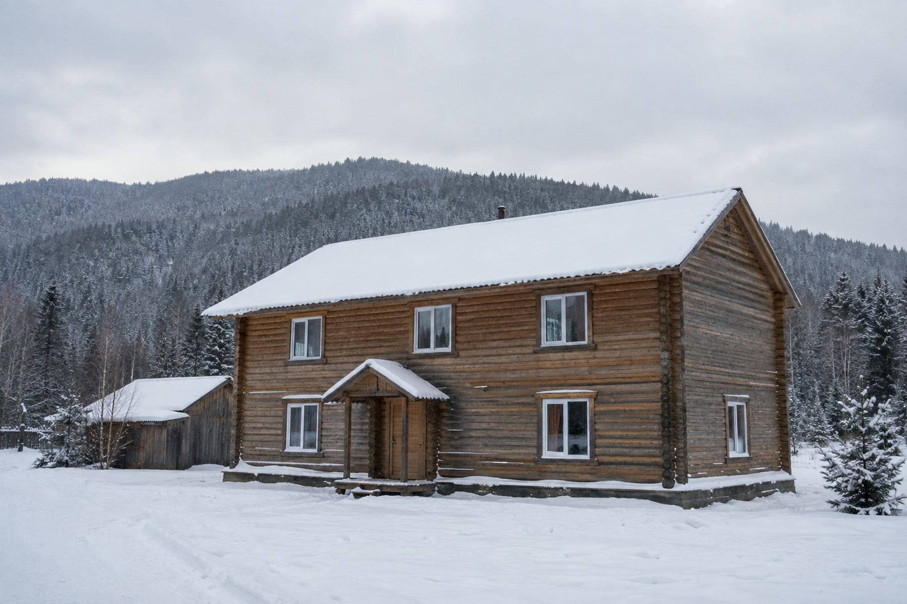

Скважина в Шерегеше: вода для дома, гостиницы и базы
В Шерегеше у скважины часто другая задача: обеспечить гостиницу или базу в сезон пиковой нагрузки. Считаем потребность под неравномерное потребление и разбираем роль накопительной ёмкости.
Для частного дома скважину считают один раз — под среднее потребление семьи, с небольшим запасом. Для гостиницы или турбазы в Шерегеше такой расчёт не работает: в сезон здесь бывает почти пусто, а в новогодние праздники и на школьных каникулах — заполнено под завязку, и разница между этими двумя состояниями может быть кратной. Скважину, рассчитанную «на среднее», объект с такой посещаемостью либо не заметит в низкий сезон, либо не дотянет в пиковые дни, если сделать ставку не на тот параметр.

Неравномерность потребления: не только сезон
У частного дома потребление воды колеблется в течение суток — утренний час пик, вечерний, ночной минимум — и это единственный слой неравномерности, который обычно приходится учитывать. У объекта размещения таких слоёв больше:
- сезонная неравномерность — заполняемость гостиницы или базы в высокий сезон и в межсезонье отличается кратно, а не на десятки процентов;
- недельная неравномерность — заезд на выходные и праздники создаёт нагрузку, которой нет в будние дни;
- часовая неравномерность внутри суток — утренний душ у всех гостей почти одновременно перед завтраком, вечерняя заездная волна с заселением и душем после катания — это не растянутое во времени потребление одной семьи, а концентрированный во времени спрос десятков человек сразу.
Норматив для систем водоснабжения поселений прямо оперирует понятием суточной и часовой неравномерности потребления: коэффициент суточной неравномерности Ксут принимается в диапазоне 1,1–1,3 для максимального водоразбора и 0,7–0,9 для минимального (СП 31.13330.2021, п. 5.2). Смысл цифры простой: даже в целом городском водопроводе, где потребление тысяч разных домохозяйств усредняется и сглаживает друг друга, разница между «самым нагруженным» и «обычным» днём составляет 10–30%. У одного отдельного объекта, где нет этого эффекта усреднения по множеству независимых потребителей, а заезд гостей происходит волнами, разница между пиковым и обычным днём объективно больше — то же самое понятие, но с более выраженным эффектом.
Отдельно свод правил показывает и часовую неравномерность: коэффициент часовой неравномерности зависит от численности обслуживаемых потребителей (табл. 2 СП 31.13330.2021) и тем выше, чем меньше группа потребителей, — у крупного города пиковые часы сглаживаются десятками тысяч независимых графиков, у небольшого посёлка или отдельного объекта пик получается более резким. Прямо переносить табличные значения этого норматива на отдельную гостиницу или базу не совсем корректно: таблица рассчитана на населённые пункты, а не на здания, — но сам принцип верен и для объекта размещения: чем компактнее группа потребителей и чем синхроннее их распорядок дня (заезд, завтрак, катание, ужин), тем резче пик и тем меньше он размывается по времени суток.
Почему для объекта важнее стабильность дебита, чем его максимум
Дебит скважины — не тот параметр, который можно нарастить по желанию: это измеренная отдача горизонта при определённом понижении уровня, устойчивая величина, а не потолок, который раздвигается более мощным насосом. Как именно его измеряют и что означает цифра в паспорте скважины, подробно разобрано в статье как определяется дебит скважины — здесь важнее другое: скважина с меньшим, но стабильным дебитом для объекта размещения зачастую предпочтительнее скважины с чуть большим, но неровным дебитом, потому что стабильность позволяет спланировать компенсацию пика заранее, а нестабильность — нет.
Ошибка, характерная именно для коммерческих объектов, — пытаться закрыть пиковую нагрузку прямым наращиванием дебита или производительности насоса. Это не работает: скважина физически не отдаёт больше воды, чем способен горизонт в устойчивом режиме, а попытка форсировать откачку в пиковые часы просаживает уровень в стволе и создаёт риск для насоса и фильтра. Правильный инструмент для сглаживания пика — не более мощная скважина, а накопительная ёмкость.
Накопительная ёмкость: как она снимает пик с небольшого дебита
Идея простая: скважина работает не «по требованию гостей», а равномерно, круглые сутки закачивая воду в накопительный бак, а из бака вода уже расходится по объекту с любой неравномерностью, какую создаёт заезд. Скважина с относительно скромным, но стабильным дебитом за счёт этого способна обслуживать объект с выраженным пиковым спросом — при условии, что ёмкость накопителя рассчитана под разницу между пиком и средним расходом, а не выбрана «на глаз».
Посчитаем на условном примере, чтобы показать саму логику расчёта, а не готовую цифру для любого объекта. Пусть скважина устойчиво отдаёт 2 м³/ч при круглосуточной откачке — это 48 м³/сут суммарного объёма, который физически можно накопить за сутки. Пусть пиковый двухчасовой интервал (утренний заезд волной с душем и завтраком) создаёт расход в 6 м³/ч — втрое больше стабильной отдачи скважины. За эти два часа пикового спроса потребуется 12 м³ воды, а скважина за то же время накопит только 4 м³ (2 м³/ч × 2 ч) — разницу в 8 м³ должен закрыть запас, накопленный в баке до начала пика. Это не цифра для конкретного объекта в Шерегеше — у другой гостиницы другая заполняемость, другой график заездов и другой измеренный дебит скважины, — а иллюстрация самого расчёта: ёмкость накопителя подбирают под разницу между пиковым часовым расходом и часовой производительностью скважины, а не под общий суточный объём воды.
Точный расчёт для конкретного объекта требует фактических данных: измеренного дебита скважины, реальной или проектной заполняемости и графика заездов — это задача для инженера на этапе проектирования обвязки, а не для прикидки по общему правилу.
Резервирование: что говорит норматив и где его граница
Отдельный вопрос для коммерческого объекта — что происходит, если единственная скважина выходит из строя в разгар сезона. Свод правил для систем водоснабжения устанавливает требование по количеству резервных скважин в зависимости от категории надёжности водозабора: при числе рабочих скважин от 1 до 4 предусматривается минимум одна резервная скважина для всех трёх категорий надёжности (табл. 5 СП 31.13330.2021).
Важная оговорка по применимости: этот норматив написан для водозаборов систем водоснабжения поселений, а не для отдельно стоящей гостиницы или базы — прямой обязанности бурить резервную скважину у частного объекта из этого документа не возникает. Но логика норматива универсальна: единственный источник воды — точка отказа всей системы, и для объекта, где остановка водоснабжения в высокий сезон означает не бытовое неудобство, а прямые убытки и репутационный риск, вопрос резервирования стоит решать осознанно, а не по умолчанию полагаясь на то, что скважина не подведёт именно в разгар заезда.
Когда вода для объекта перестаёт быть «для собственных нужд»
Здесь стоит один принципиальный, редко проговариваемый момент. Закон о недрах допускает добычу подземных вод без лицензии при одновременном соблюдении трёх условий: объём не более 100 м³ в сутки, используемый горизонт не служит источником централизованного водоснабжения и залегает выше таких горизонтов, а сама вода идёт на личные, бытовые и иные нужды, не связанные с предпринимательской деятельностью (ст. 19 Закона РФ «О недрах» от 21.02.1992 № 2395-1).
Гостиница, база отдыха или гостевой дом, который сдаётся как коммерческое размещение, — это по определению предпринимательская деятельность, и третье условие льготы здесь не выполняется независимо от того, сколько именно воды в сутки объект фактически потребляет. Даже если водозабор объекта скромный и укладывается в 100 м³ в сутки с большим запасом, сама природа использования — приём платных гостей — выводит скважину из-под льготного режима «для собственных нужд». Это отличается от пограничного случая частного дома, который иногда сдают посуточно, — там оценка требует отдельного разбора конкретной ситуации; полный разбор всех условий лицензирования и пограничных случаев — в статье нужна ли лицензия на скважину. Для объекта размещения, работающего как бизнес, разумнее заранее считать, что оформление водопользования потребуется в общем порядке, а не рассчитывать на бытовую льготу.
Что из этого стоит проговорить с инженером до бурения
Для объекта в Шерегеше расчёт водоснабжения — это не «пробурим скважину и посмотрим», а последовательность вопросов, каждый из которых нужно закрыть до начала работ: какая заполняемость ожидается в пиковые периоды и как она распределена по часам суток, какой дебит покажет опробование скважины после бурения, какой объём накопительной ёмкости закроет разницу между пиком и стабильной отдачей, нужно ли резервирование источника при том масштабе убытков, который несёт объект при перебоях, и в каком порядке оформляется водопользование при коммерческом характере использования воды. Обсудить эти вопросы применительно к конкретному объекту размещения можно при заказе бурения скважины на воду.